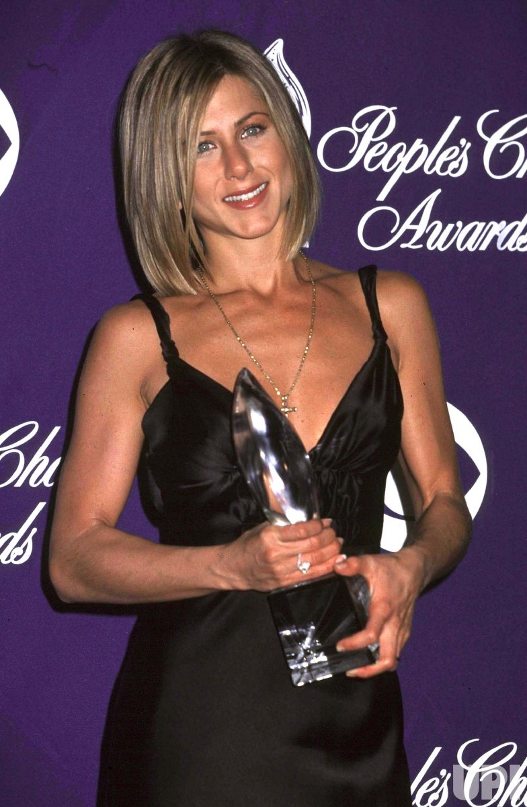

prijzen van de cast apart
Jennifer Aniston

- 2002 - Emmy award voor vrouwelijke hoofdrol in een komedieserie
- 2003 - Golden Globe voor beste actrice in een komische serie
- 2002 - Teen Choice Award, choice tv-actrice komedie
- 2003 - Teen Choice Award, choice tv-actrice komedie
- 2004 - Teen Choice Award, choice tv-actrice komedie
- 2000 - people's choice award voor favorite female television preformer
- 2001 - people's choice award voor favorite female television preformer
- 2002 - people's choice award voor favortie female television preformer
- 2003 - people's choice award voor favorite female television preformer
- 2004 - people's choice award voor favorite female television preformer
- 2004 - Logie award voor most popular overseas star
Courteney Cox
Lisa Kudrow
- 1998 - Primetime Emmy Award voor vrouwelijke bijrol in een komische serie
- 2000 - Screen Actors Guild Award voor vrouwelijke hoofdrol in een komisch serie
- 2000 - American Comedy Awards, funniest supporting female performer in a television serie
- 2001 - Satellite Award voor beste actrice in een komische of muzikale serie
Matthew Perry
Matt LeBlanc
- 2002 - Teen Choice Award, choice tv-acteur komedie